What moves from docker run into Compose:
docker build -t ... becomes build: . (Compose builds the image and names it after the project).-p 127.0.0.1:8080:3000 becomes ports: ["127.0.0.1:8082:3000"] on the app service only.-e / --env-file becomes the environment: block, with values read from .env.--name lab11-... becomes the project name lab12-express-6788117 plus the service names app and db.host.docker.internal (Lab 11) is replaced by the service name db on the Compose network.
New in Compose: a named volume for the DB, healthchecks, and depends_on so the app waits for the DB.docker stop + docker rm becomes docker compose down.
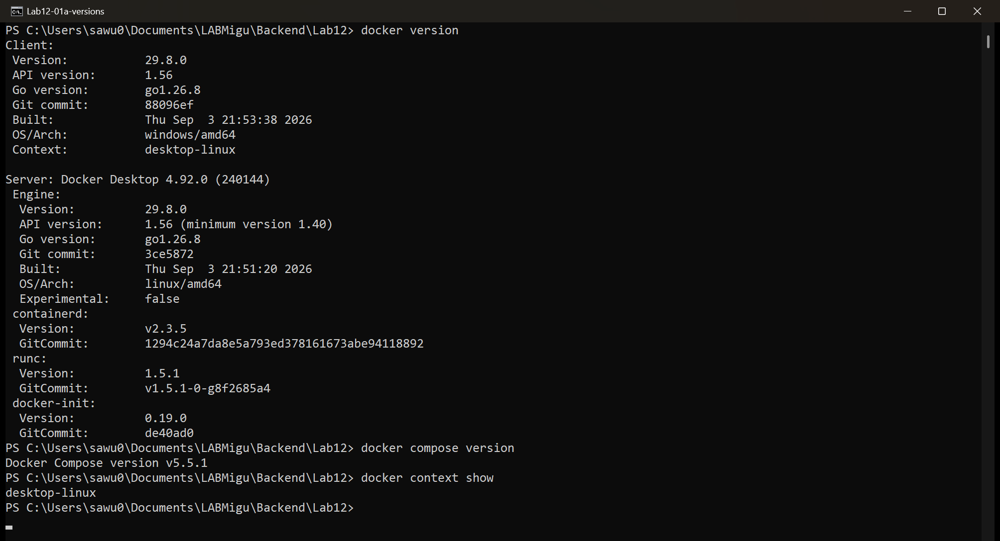
docker version shows both Client and Server (Engine 29.8.0), so the engine is running. Compose is v5.5.1 and the context is desktop-linux.
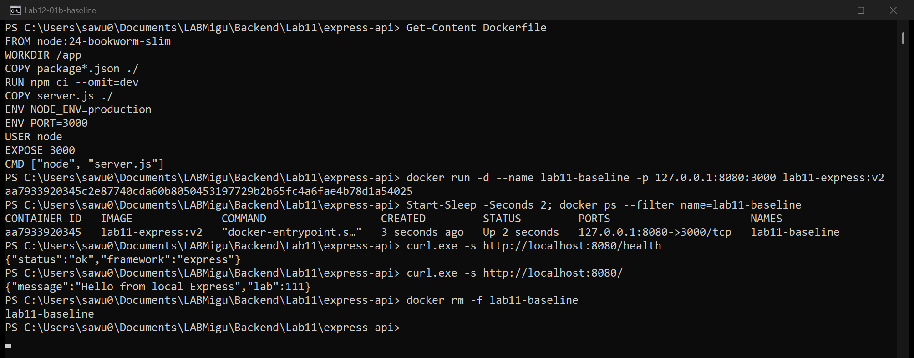
Baseline before adding a database: my Lab 11 Express image lab11-express:v2. The Dockerfile starts the app with node server.js, the container port is 3000 and the health route is /health. I ran it with -p 127.0.0.1:8080:3000 and both requests worked, then I removed the container.
Folder Lab12/reference-express. I added the pg package to the Lab 11 Express starter, plus POST /notes, GET /notes, and a /health route that runs a real SQL query. The app creates the notes table when it starts.
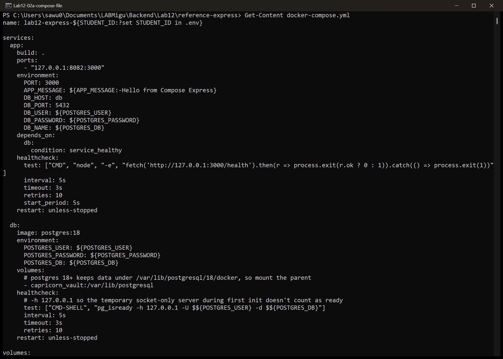
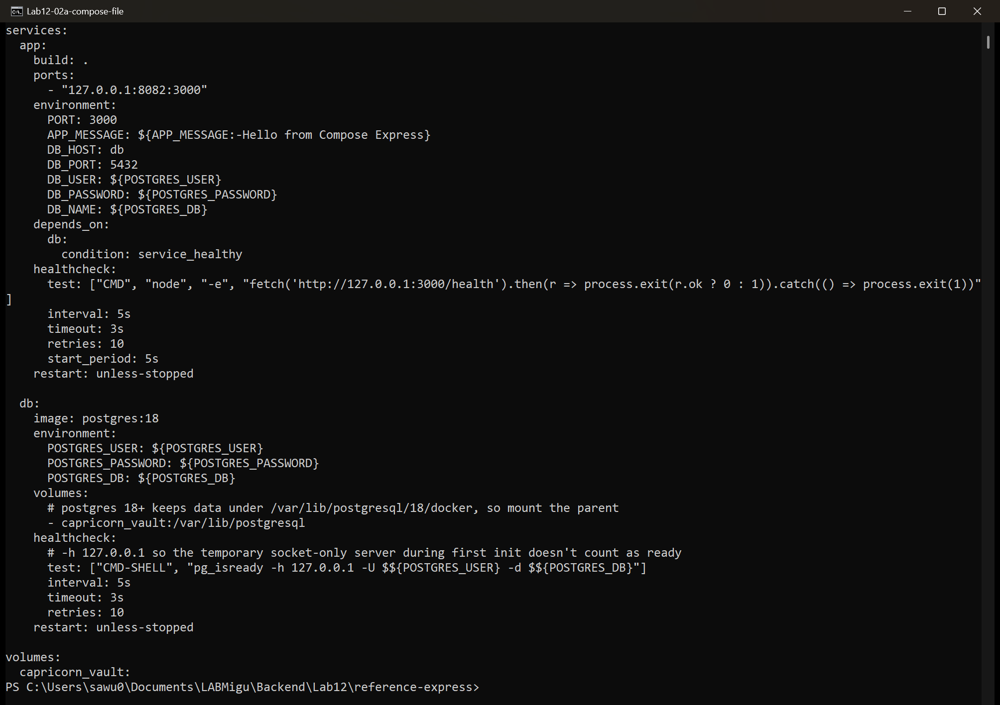
docker-compose.yml: exactly two services, app and db. The project name comes from STUDENT_ID. Only app publishes a port. db has the named volume capricorn_vault, and app waits until db is healthy.
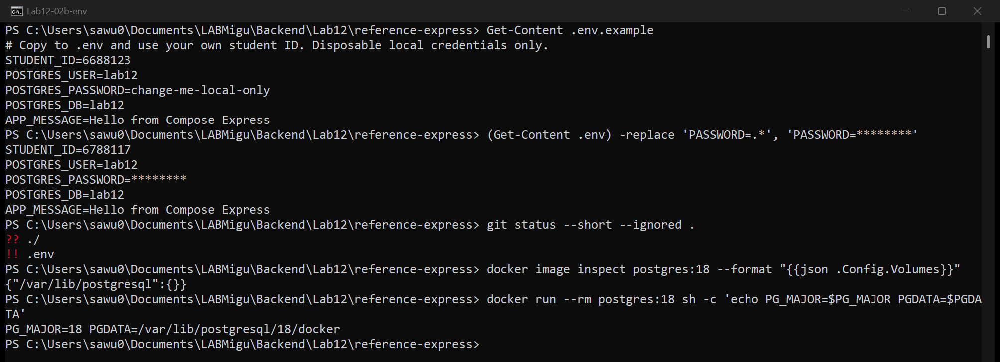
.env.example (tracked) and my real .env with the password hidden. git status --ignored shows .env as ignored (!!). The postgres:18 image declares its volume at /var/lib/postgresql and keeps data in /var/lib/postgresql/18/docker, so I mount the volume on /var/lib/postgresql. Older guides use /var/lib/postgresql/data, which is wrong for major 18.
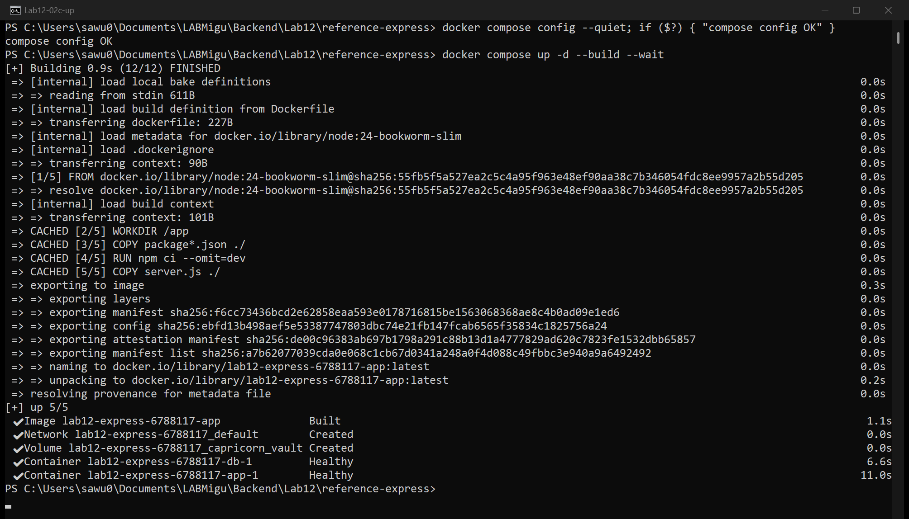
docker compose config --quiet passes, then up -d --build --wait builds the app and creates the network, the volume lab12-express-6788117_capricorn_vault and both containers. It returns only after both are Healthy.
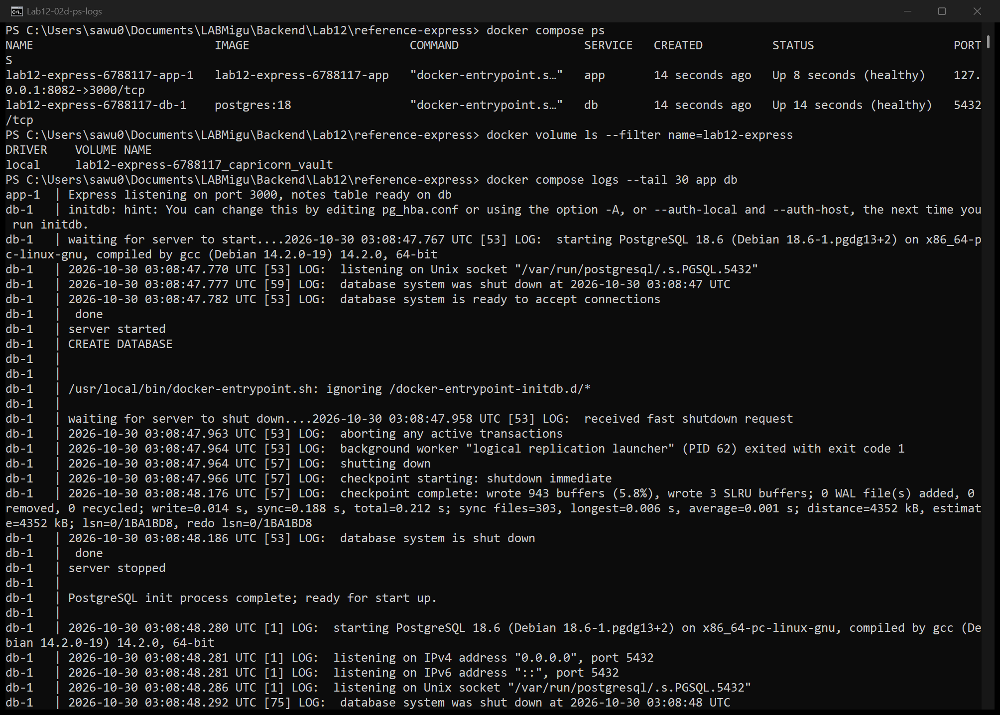
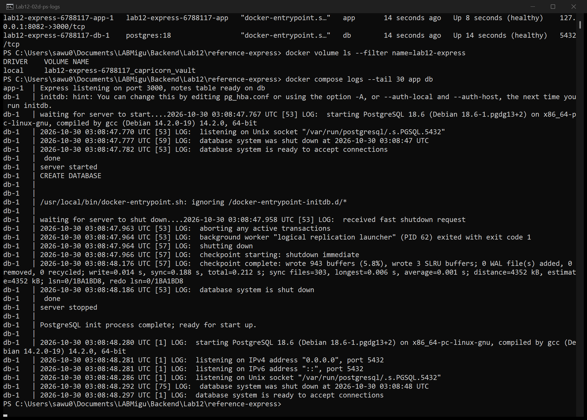
docker compose ps shows both containers healthy, and only the app has a host port (127.0.0.1:8082->3000). The DB logs show the first-run init (create the database, stop the temporary server) and then the real server listening on 5432. The app log says the notes table is ready on db.
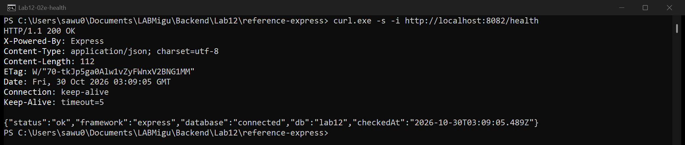
GET /health returns 200 with "database":"connected". This comes from a query, not a fixed response.
Healthchecks. db uses pg_isready -h 127.0.0.1. On the first start, Postgres runs a temporary server that only listens on a Unix socket, so a socket check could say "ready" too early. Checking over TCP avoids that. app is healthy only when /health returns 200, which means it can query the DB.
Ports. Only app publishes a port, on 127.0.0.1:8082. The DB does not need one because the app reaches it inside the Compose network, and keeping 5432 closed means nothing on my laptop or LAN can log in to it directly. I used 8082 so it does not clash with Lab 11's 8080/8081.
Two kinds of variables. Compose reads .env only to fill in ${...} inside docker-compose.yml (interpolation). A variable in .env does not go into a container by itself. Each container gets only what its environment: block lists: app gets PORT, DB_HOST=db, DB_PORT, DB_USER, DB_PASSWORD and DB_NAME, and db gets POSTGRES_USER, POSTGRES_PASSWORD and POSTGRES_DB. STUDENT_ID is only used for the project name.
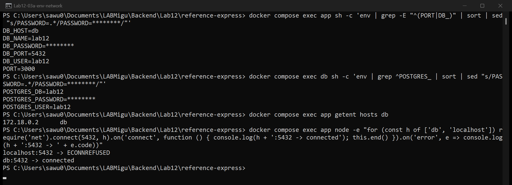
The variables inside each container (passwords hidden). Inside the app, db resolves to 172.18.0.2. A TCP test from the app container: db:5432 connects, but localhost:5432 is refused.
Connection path:
Browser / curl on my laptop → localhost:8082 → (Docker port publish) → app container port 3000app container → db:5432 on the lab12-express-6788117_default network → db container (PostgreSQL)
My laptop uses localhost:8082 because Docker publishes the app there. Inside the app container, localhost means the app container itself, and nothing listens on 5432 there, so localhost would be the wrong DB host. Compose gives every service a DNS name on its network, so the app uses db.
Testing tool: curl.exe and PowerShell (ConvertTo-Json for the body).
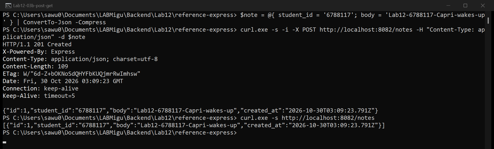
POST /notes with my student ID and marker returns 201 Created. GET /notes returns the same row.
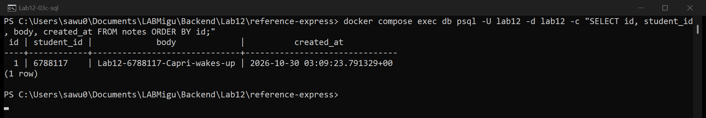
Independent check with psql inside the DB container. The row matches the API.
Original row: id 1, student_id 6788117, body Lab12-6788117-Capri-wakes-up, created_at 2026-10-30T03:09:23.791Z (API) = 2026-10-30 03:09:23.791329+00 (SQL). Same instant; the API shows milliseconds and SQL shows microseconds.
| Test | DB container ID | Named volume | Record ID | Marker + created_at |
|---|---|---|---|---|
| Initial | 9756324eaa3b | lab12-express-6788117_capricorn_vault | 1 | Lab12-6788117-Capri-wakes-up, 2026-10-30T03:09:23.791Z |
| After restart | 9756324eaa3b (same) | lab12-express-6788117_capricorn_vault | 1 | Lab12-6788117-Capri-wakes-up, 2026-10-30T03:09:23.791Z |
| After down/up | 9e3d5d0a6487 (new) | lab12-express-6788117_capricorn_vault | 1 | Lab12-6788117-Capri-wakes-up, 2026-10-30T03:09:23.791Z |
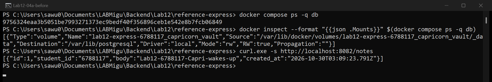
Before testing: DB container 9756324eaa3b.... The mount is the named volume lab12-express-6788117_capricorn_vault at /var/lib/postgresql.
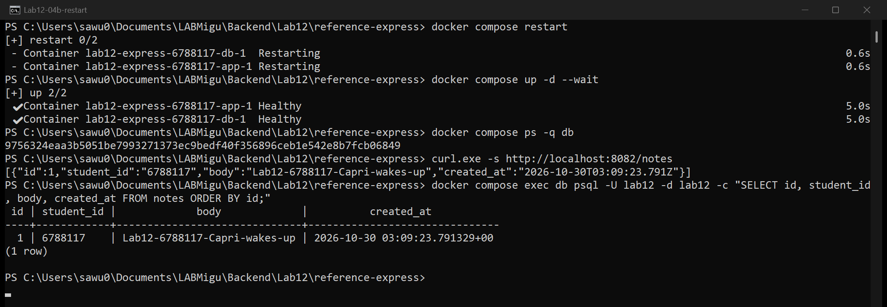
docker compose restart then up -d --wait. A restart stops and starts the same containers, so the ID is the same. API and SQL still show row 1.
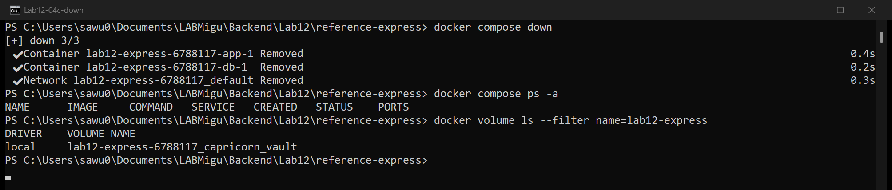
docker compose down (no -v) removes both containers and the network. ps -a is empty, but the volume is still listed.
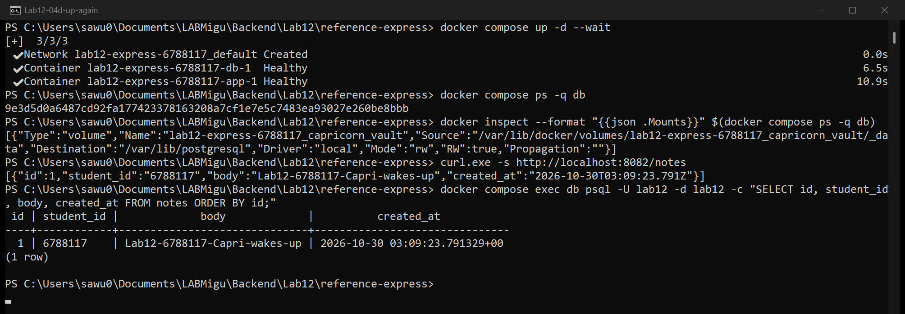
up -d --wait creates new containers. The DB container ID is now 9e3d5d0a6487..., but the mount is the same named volume. API and SQL show the same id, marker and created_at. I did not POST again.
Why the row survives. PostgreSQL writes its files to /var/lib/postgresql, and that path is the named volume, not the container's own writable layer. down deletes the container and its layer, but Compose never deletes named volumes on a normal down. The new container mounts the same volume and finds the old data files, so it skips init and serves the old rows.
down vs down -v. Plain down removes containers and the network and keeps named volumes. down -v also deletes the project's named volumes, so the data is gone. I did not run -v on my evidence data.
A volume is not a backup. It is a single copy on the same disk, inside the Docker Desktop VM. down -v, docker volume prune, resetting Docker Desktop, disk failure, or a bad DELETE all destroy it, and there is no older version to go back to. A backup is a separate copy kept somewhere else, for example pg_dump output saved outside Docker.
Project, framework and DB: Hotel Booking System API, NestJS 11 + Prisma 6, MySQL 8.4 (same engine and ORM as Lab 10/11), Redis for the room cache
Write/read routes: POST /rooms (ADMIN JWT) and GET /rooms?search=Capri, plus POST /auth/register and POST /auth/login
Ports: container 3000, host 127.0.0.1:8090
Compose project: lab12-project-6788117 (the reference is lab12-express-6788117)
Volume: lab12-project-6788117_talia_safehouse mounted at /var/lib/mysql
I copied my Lab 11 project into Lab12/hotel-booking-api. In Lab 11 the container used MySQL on my laptop through host.docker.internal. Now MySQL and Redis are Compose services and the app reaches them as db and cache. I added a /health route that runs SELECT DATABASE(), NOW(3) through Prisma, and a migrate stage in the Dockerfile so the schema is created with prisma migrate deploy before the API starts.
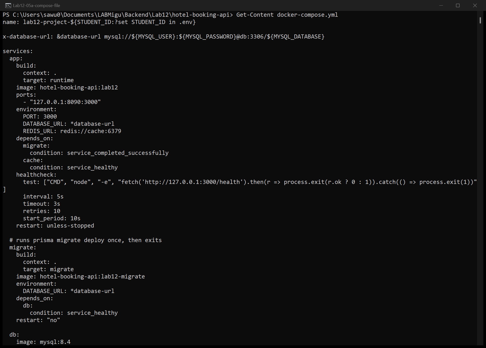
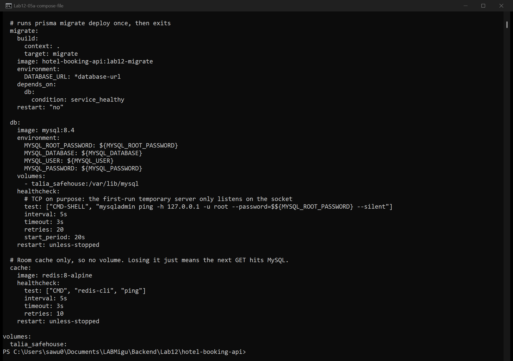
Four services. migrate waits for a healthy db, runs once and exits. app waits for migrate to complete successfully and for cache to be healthy. DATABASE_URL is built from .env values with host db. Redis has no volume because the cache can be rebuilt from MySQL.
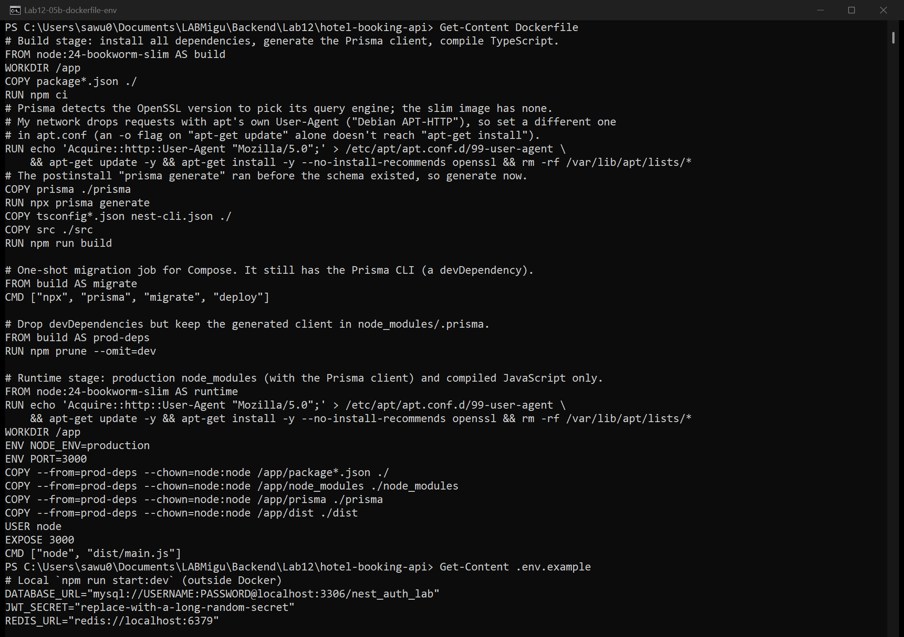
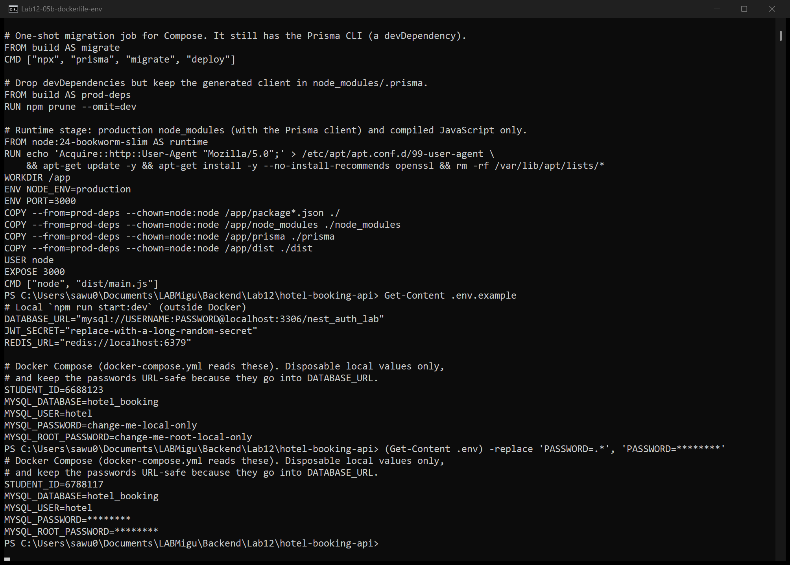
Dockerfile stages: build, migrate (still has the Prisma CLI), prod-deps (prunes dev packages) and runtime. .env.example has a local section and a Compose section, and the real .env has hidden passwords.
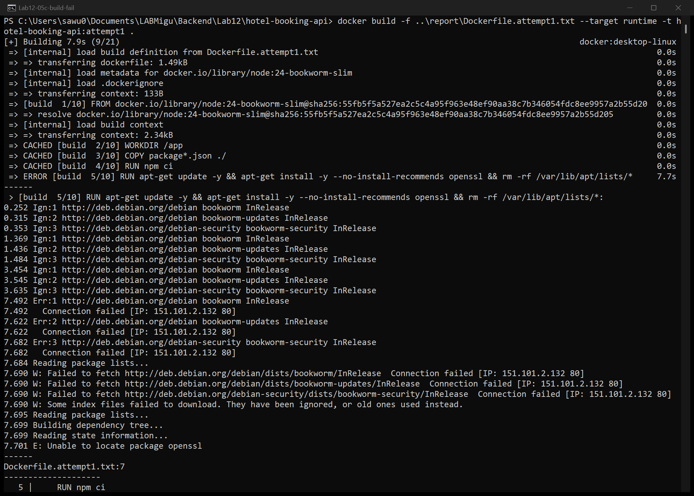
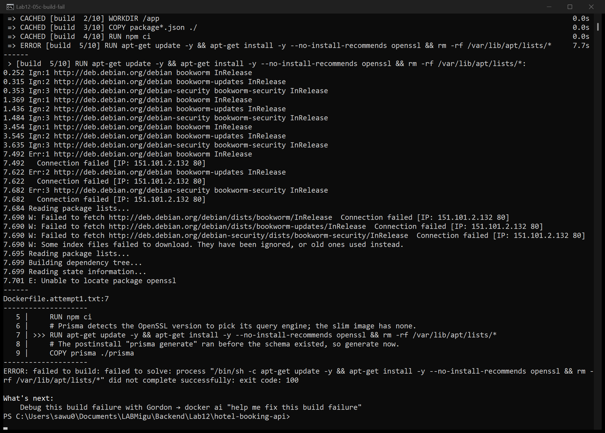
My first Compose build (the Lab 11 Dockerfile, kept as report/Dockerfile.attempt1.txt) failed at apt-get update: every request to deb.debian.org port 80 ended with Connection failed, so E: Unable to locate package openssl. The same Dockerfile built without problems in Lab 11.
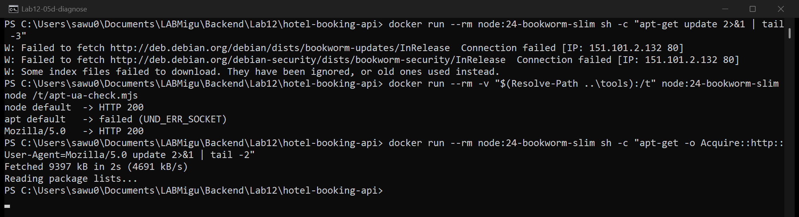
Diagnosis. Plain apt-get update fails in a normal container too, so it is not Compose. I wrote tools/apt-ua-check.mjs to fetch the same Debian URL with different User-Agents: Node's default and Mozilla/5.0 get HTTP 200, but apt's own Debian APT-HTTP/1.3 is cut off. So my network drops requests with apt's User-Agent. With -o Acquire::http::User-Agent=Mozilla/5.0, apt-get update works.
Fix. My first try put -o Acquire::http::User-Agent=... only on apt-get update. The index downloaded, but apt-get install still used the default agent and failed on the .deb files. So I put the setting in /etc/apt/apt.conf.d/99-user-agent, which both commands read, in the build and runtime stages.
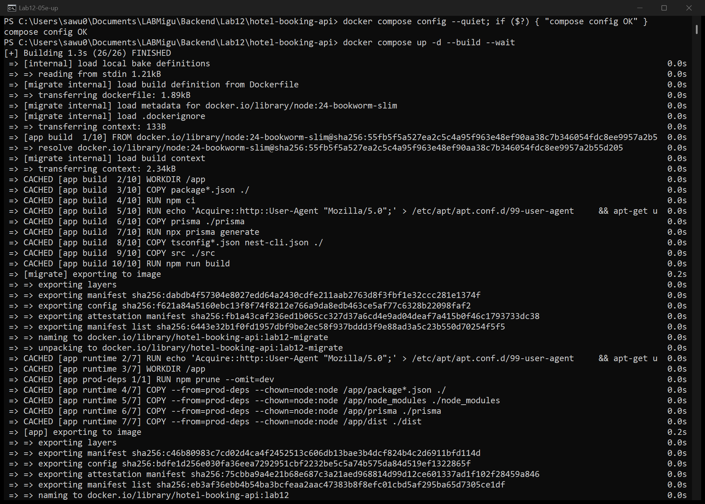
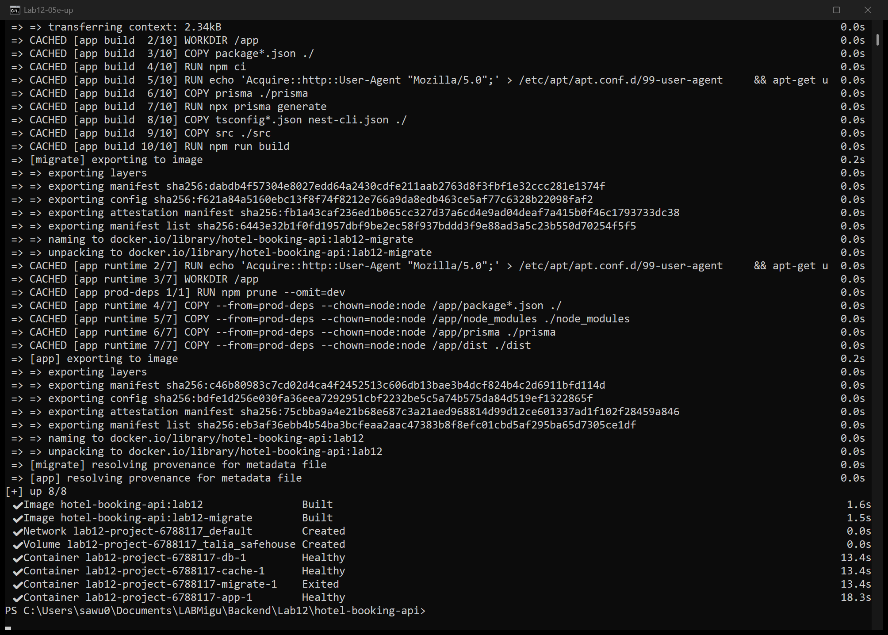
With the fix, docker compose up -d --build --wait builds both images (lab12 and lab12-migrate) and creates the volume lab12-project-6788117_talia_safehouse. db and cache are Healthy, migrate Exited and app Healthy.
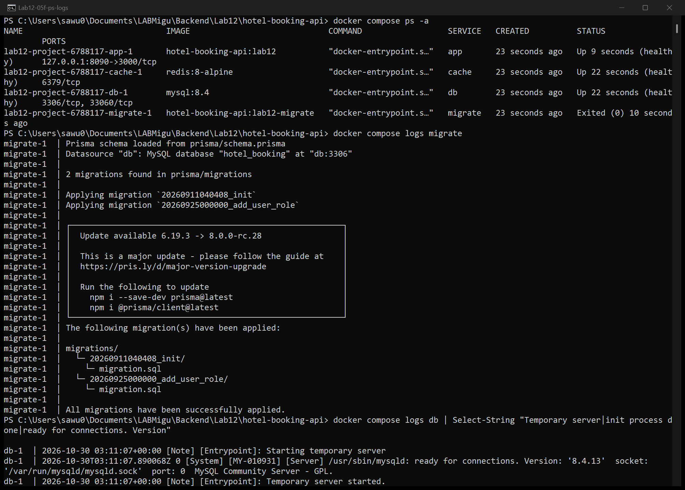
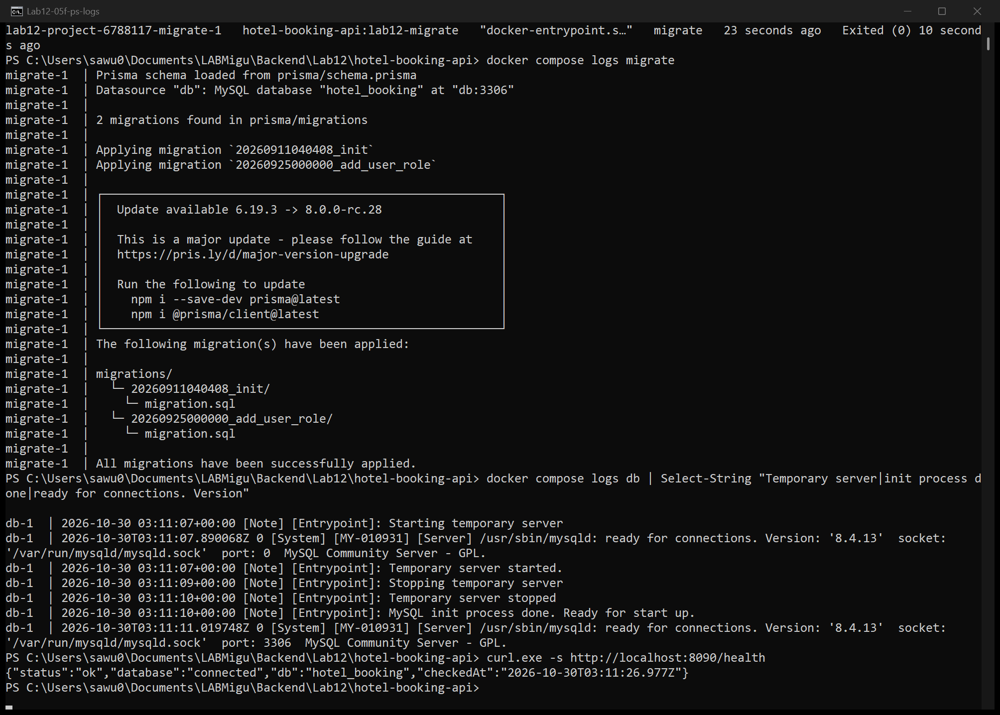
migrate exited with code 0 after applying both migrations to hotel_booking at db:3306. The DB log shows why my healthcheck uses mysqladmin ping -h 127.0.0.1: on first start MySQL runs a temporary server with port: 0 (socket only), stops it, and then starts the real server on port: 3306. A socket ping would pass during the temporary server and migrate would fail to connect. /health reports the DB as connected.
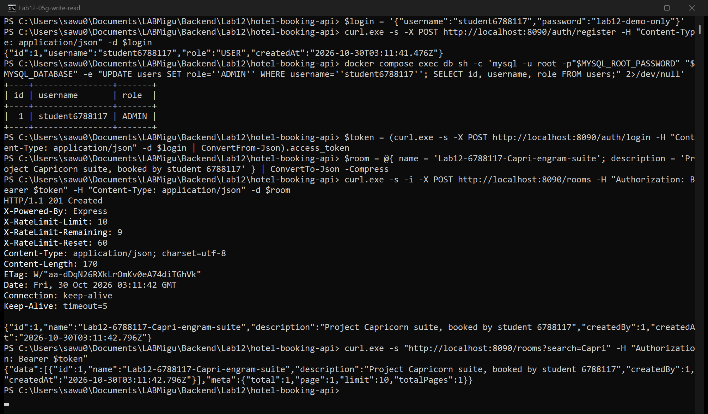
Register student6788117 (USER), promote it to ADMIN with SQL inside the db container (register never accepts a role), log in, then POST /rooms returns 201 with room id 1, Lab12-6788117-Capri-engram-suite, createdAt 2026-10-30T03:11:42.796Z. GET /rooms?search=Capri returns it. The password is a throwaway value that only exists in this local Compose database.
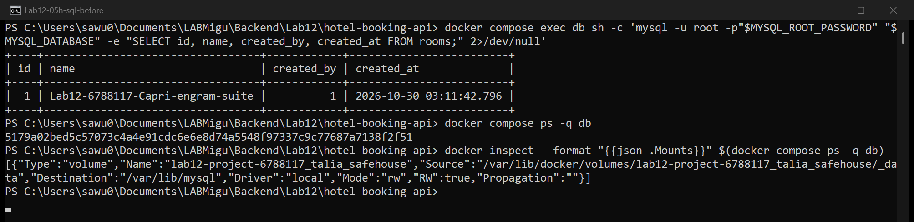
SQL check: the same row in MySQL (created_by 1). DB container 5179a02bed5c... with the volume lab12-project-6788117_talia_safehouse at /var/lib/mysql.
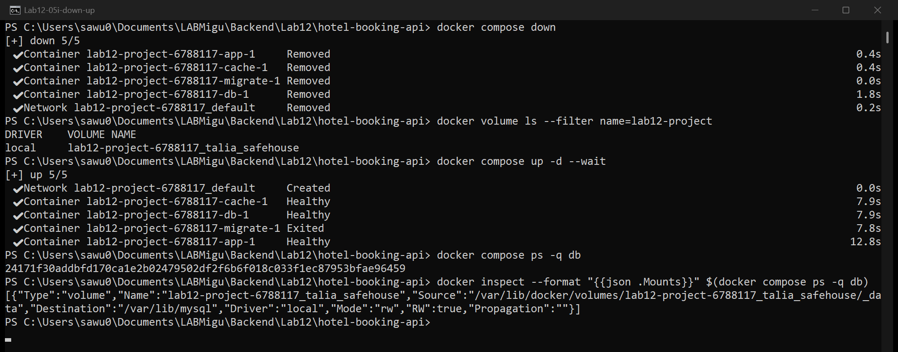
docker compose down removes all four containers. The volume is still there. After up -d --wait, the DB container is new (24171f30addb...) but the mount is the same named volume. migrate ran again and exited before the app started.
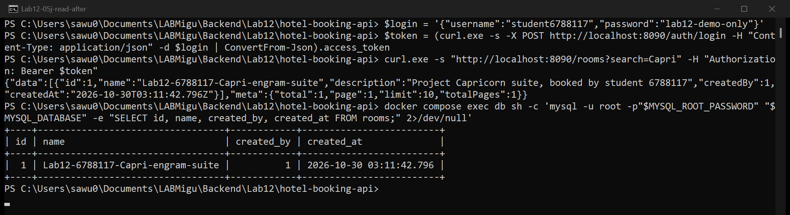
After recreation I only logged in and read. API and SQL show the same room id 1, name and created_at (03:11:42.796). Redis was recreated empty, so this GET came from MySQL, not from an old cache entry.
| Test | DB container ID | Named volume | Record ID | Marker + created_at |
|---|---|---|---|---|
| Before | 5179a02bed5c | lab12-project-6788117_talia_safehouse | 1 | Lab12-6788117-Capri-engram-suite, 2026-10-30T03:11:42.796Z |
| After down/up | 24171f30addb (new) | lab12-project-6788117_talia_safehouse | 1 | Lab12-6788117-Capri-engram-suite, 2026-10-30T03:11:42.796Z |
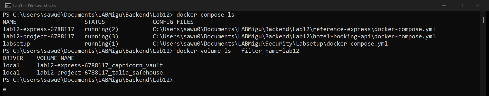
Both stacks have their own project name and volume, so my project never reuses the reference DB. (labsetup is from another course.)
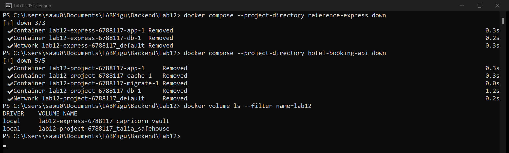
Cleanup with plain docker compose down for both projects. Both volumes are kept.
Copy-Item .env.example .env and set STUDENT_ID and throwaway, URL-safe MySQL passwordsdocker compose config --quietdocker compose up -d --build --waitdocker compose ps -a (migrate Exited (0), the others healthy) and curl.exe -s http://localhost:8090/health
Stop with docker compose down (never -v on data you need)
Locally I have one API container and one MySQL container on one machine. In Lab 13 the API image (the runtime target) becomes the application service, and MySQL should become a database service with its own storage and backups instead of a container volume on my laptop. Values from .env become settings or secrets on the platform, and DATABASE_URL will point to the cloud database host instead of db. The migrate step has to run against that database before the new API version starts. Redis can stay a cache service. My local rows will not appear online by themselves. The volume stays on my laptop, so I would need to export the data (for example with mysqldump) and import it, or start online with an empty database.